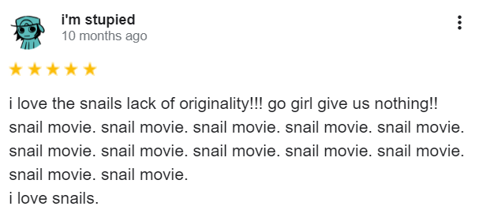

Time truly flies, doesn’t it? It’s almost a year since I first rewatched Turbo and left this well-articulated and unbiased review:

Since writing review, I have rewatched the movie numerous times and have been slowly chipping away the Netflix Original Cartoon. My initial hype of the movie (and snails in general) has toned down a lot. I believe it is safe for me to talk about this film without the rose-tinted glasses. So, with this more appropriate line of thinking, how do I feel about this movie?
To be honest, I still think it’s a pretty good movie.
The movie is funny, it has a unique premise, and it undoubtedly has charm. Not many people share the same sentiment though. The common criticism seems to go along the lines of the execution and premise being too silly. They think the message was lazily cliché and they can’t help but view the film as nothing more than a safe marketable product from the soulless animation companies. awwwwooo so scary---
To each their own I suppose, but I’d like to put in my two cents. I do not believe this movie to be ‘soulless’ or ‘lazy’. In this blog post, I’d like to walk you through each scene and recontextualize the movie. Without further ado, let’s get to it!
Once upon a time there was an ambitious fella by the name of Theo. Every day, he envisions a future. He hopes to become a racer. Well, there was a problem with that… You see… Theo was a snail.
Snails aren’t very good racers. They’re small, They’re slow, and extremely stupid. Despite that it wasn’t enough to discourage Theo. In fact, he proudly starts calling himself, “Turbo”. His brother Chet did not approve of these delusions. Chet didn’t disregard he’s feelings out bad will. He was just concerned for his brother and rightfully so, Turbo was made a laughingstock to his community. He was often isolated for simply having a peculiar passion.
In the garden, the other snails follow the same cycle every day. Which is:(1) Collect the Tomatoes (2) Eat the Tomatoes (3) Hide in their shells and hope they don’t get eaten by some rouge crow or get obliterated by the gardener’s lawnmower.
Very easy going and simple way of living.
After every day of hard work, Turbo just goes back inside the house to watch his favorite racer, Guy Ganye. It’s clear to see where Turbo got his ambitious mindset. This unwavering enthusiasm usually doesn’t cause that much harm. That’s until one day he decided to do something extremely stupid.
He challenges a god fucking lawnmower to a race.
This scene was downright heartbreaking. For a moment we get a visual glimpse of Turbo’s psyche. His passion and hopes, vulnerably revealing itself. Only for it metaphorically and literally be shredded right in front of us. He was luckily saved at the last moment and escaped the faith of being lawn-kill. Naturally he got yelled at by Chet.
Turbo takes a long walk ruminate what has happened. He was ignoring the feelings of his brother, just so he can risk his life for an impossible dream. At this point Turbo considers that maybe it’s time to wake. There’s no point in lingering on something that will never happen. It’s time for him to get his life back on track.
HA! Obviously, we can’t have that! That would make this move boring!! Turbo accidently gets on top of the car of an underground car race. He has fun feeling the thrill of the wind blowing on his stocks and the aggressive competition. This joy was short lived since his snail mucus was not strong enough to hold on and gets sucked in the engine.
We get super cool segment of the fuel getting into Turbo’s blood stream. This causes a huge shift in his DNA; because you know, Science! :D
Like a badly written golden age superhero, Turbo now has all the abilities of a car! His eye can turn off and on like headlamps, he can play the radio through his mouth, and, most importantly, he was speedy. Zooming here, zooming there! Turbo was over the moon with this new unnatural ability.
His brother was not as impressed as Turbo was. Especially since Turbo gets Chet stripped of his position after accidently driving a bicycle into the tomato garden. As the two argue Chet inconveniently get snatched by a crow. Turbo follows them and saved Chet from them. Once they were able to settle down and looked about, they realized. They’re lost! They have no idea where they were.
Chet spirals into a panic and Turbo attempts to calm him down, reassuring that nothing bad would happen. So that was a lie.
The two get swooped up by a human who takes them into a garage so that they can have… A SNAIL RACE. How plot convenient. There was a group of people gathered around putting their own racers and betting on who would win. The other snails looked like they we’re into it as well. They trashed talked Turbo to scare him and they looked they were ready to race it out!
1... 2... 3... GO!!!
.....
...
So it turns out these other snails are really slow. I loved how serious they looked while they made stupid car noises. I thought it was absolutely adorable.
Turbo then showed off his super speed and amazed everyone there!!! After the race, the other snails came along to befriend Turbo. Each one showcasing their mutual interest in racing while proudly proclaiming their dorky names. Turbo, being a little cocky about his new powers, makes fun of the other snails.
The leader of the FAST crew, Whiplash, gets offended and challenges him to a race. During this race Turbo made an amazing discovery. These snails are surprisingly really awesome! Despite the other snails being slow, they made up for with innovation and resourcefulness. They sleighed through a power line!!! How epic is that!!! Even when Turbo lost, he couldn’t help but appreciate and look up at the other snails. If they can cover this much ground without speed, maybe he really does have a chance. Turbo finally found a community where he felt like he belonged. He’s never been anymore happier in his life.
We later learn that the person who picked Turbo up is a taco stand owner names Tito. He is hyper-imaginative and constantly thinking up ideas to market his brother’s tacos. During a small conversation with the snail, Tito thought up his magnum opus, the greatest marketing plan that ever has ever been done.
To enter Turbo into the Indy 500!
Yeaaaaahh-- When it comes to Tito's great ideas, the bar is quite low. His brother Angelo is very fed up by this. He knows Tito means well but he’s learned to be content with the slow-paced life that everyone in Starlight Plaza has grown accustomed to. In this scene you see this interesting parallel between the duo’s relationship. One yearns for more without thinking about its consequences. While the other is too scared to lose what they already have. Tito’s request to use the business funds for the entry fee was understandably rejected. It didn’t matter, this event only helped strengthen Tito’s and Turbo relationship. Just like Turbo, Tito was not quick to give up.
The next morning Tito gathers his friends around and attempts to convince the rest of his friends to donate some money for the cause. This didn’t end that well and the FAST crew decided to take matters into their own eye stocks. They hijacked a bus and effectively forced the tourist to wait by the strip mall.
It was a great success! All their businesses got some profit, and the tourists enjoyed their time watching the snails racing it out with Turbo. This was the first in quite a while since the Starlight Plaza had gotten this much traction! Due to this. Tito’s friends had a change of heart and decided to entrust them with the money to enter the Indy 500.
We get this really fun travel/training montage of Turbo zooming on the open road while Tito’s and everyone else follows along. When they arrived on Indianapolis, where the event would be held, they we’re denied entry of the race. That was until Turbo got into the track and got an average of 226 mph. That was only 4 points behind Guy Ganye’s best time! It was just about enough for him to be qualified to join the race. (I’m just quoting the movie I don’t know anything about automobile racing)
This strange event was recorded by some kid who uploaded it to the internet. This scene is so out of date to the point really funny. I literally know no one who still uses email for personal communication, much less use it to spread trending memes lmao. The video of Turbo literally blew everyone’s stocks off! Everyone was fascinated by this speedy snail and was anticipating the statement from the owner of the Indy 500. When the press conference finally came, he set down his verdict.
He didn’t want Turbo to participate in the race.
This obviously disappoints a lot of people and the press begin to circle in to asked question. Coincidentally Guy Ganye was present. He saw the reaction of the others and decided to step in. He advocated for Turbo’s right to join in the race, making sure that the reporters were taking note of act of ‘kindness’. The owner eventually gave in and agreed reluctantly.
Can you believe it? THE Guy Ganye! Standing up for him! Turbo was over the moon by this. There was still something that sadden him. He may have be able to gain the support of idol but not from his own brother. Chet once again express concern for Turbo’s safety. Stubbornly Turbo refuses to listen and goes outside.
It was only when the two were alone did Turbo learn of Guy Ganye’s true nature. He didn’t actually believe that Turbo had a chance. He was just using him to stir up national interest and bring eyes on the race. That motivational personality was nothing more than a façade to hide his massive ego and need for validation. This scene was chilling to say the least. I usually love villains, but Guy Ganye is definitely an exemption.
Snails aren’t very good racers. They’re small, they’re slow, and they can easily get crushed 1000-pound automobiles. I love how often the movie scales out to remind us how tiny Turbo is against everything around him. That's just life, isn't it? We often feel like tiny snails stuck with gigantic mechanical beings rushing through the finish line. Turbo being woken up to reality realize how stressful being in track is and he trips and stumble and almost gets crushed.
When he reaches the pit stop, he’s burnt out and considers giving up to giving up. The fast crew quickly jumped in and gave him moral support… by slapping Turbo a bunch… Whiplash aggressively yells:
“are you a car!?!”
“no”
“ARE. YOU. A. CAR??”
“NO!”
“THEN STOP DRIVING LIKE ONE!”
With this Turbo realizes that the thing that made it an inconvenience was the very thing that got him there. Instead of comparing himself to other racers he uses his own skill set to advance. He decided to be himself and to race like a snail. It was such a joy watching him zoom through with unorthodox methods. To sticking to walls, to driving underneath other racers, and even hanging on other racer’s cars.
As the race was going on the commentators mentioned a piece of trivia that I found very interesting. As we all know, car tires are made of rubber. When I googled, it mentions that the irl Indy 500 requires you to race 200 laps! With that in mind, the heat from friction that comes along must be insane. This causes the rubber tires to undergo chemical change that wears them out. This will leave scraps of rubber called marbles on the racetrack. The name is quite fitting because that’s exactly what they feel like when you’re driving through them, or so I’ve read.
It wasn’t long till Turbo finally got past everyone and maintained his position of number one. Being the egotist he was, Guy Ganye felt terrified of the idea of losing. Especially since he was behind some other racers. So, he decided to take a shortcut. Unfortunately, this shortcut involved maneuvering to the side of the track with heaps of marble.
With all of this said and done. Is Turbo a cliché movie? Yes! Believing in yourself is the standard of any western animated media. But would I call it lazy and soulless? No!
There is just so much to adore about this movie. To the hilarious gags, the creative races, and the confidence and faith it has on its message. There is just something so honest about the film. I can't help but watch in total awe.
If I had anything to complain about the movie, it’s the art direction. The movie does have a lot of genuinely beautiful shots, like the iconic scene where Turbo looks over busy highway, but it struggles choosing between having accurate to life lighting and stylistic atmosphere. I really enjoy scenes that have this mellow yellow accent. It was used in scenes at the Starlight Plaza.
Those scenes made me feel extremely nostalgic. It reminded of the afternoons I spent pretending to sleep, long enough for my mother to leave the room. I would get and then quietly play with my toys or open a coloring book. There is something so close to home about the way everything is rendered, and the oversaturated colorful snails actually looked like they belonged in the film.
Oh yeah, did I forget to mention? The snails in the movie rarely ever look like they belong there. Which is stupid since the movie is about them. You’d think they should look like the least odd thing in the movie. I tend to be really picky of saturation and the movie doesn’t handle it well. There were a lot off putting scenes with such murky black shading on bright colors that do not fit the environment. I especially despise the shade of blue on Turbo’s shell. This is why I love the recolors in the Netflix Original Show. (that’s a blog for another time)
The attempt of realistic coloring really annoys me. They clearly hired talent who knew how to set up an elaborate environment using color. So why settle for this lackluster? I dunno much about making 3d animation, so maybe I’m being too harsh on a decade old film.
I wish I could learn more about the thought process behind many of the artistic choices in the film. I unfortunately do not have access to the movie’s art book. Currently waiting for when I’m old enough to work and earn my own money or find a kind soul to send me scans of the book.
I did watch some videos of people flipping through the book. Although the videos are too pixelated, the drawings were easily readable. My favorite concept drawings were the 2d models with exaggerated cartoon expressions and the environmental drawings in a fuzzy painterly style. It really makes me wish the movie was remade in the same experimental funky design of Into the Spiderverse.
Anyways, I think this is a good place to stop. I truthfully still have so much to say and had to omit so many other details in this movie. 3000+ words seems like a respectable amount.
I don’t think Turbo is the most movie of all movies ever. But it does hold a very very special place in my heart.